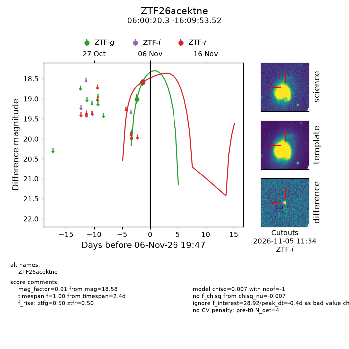
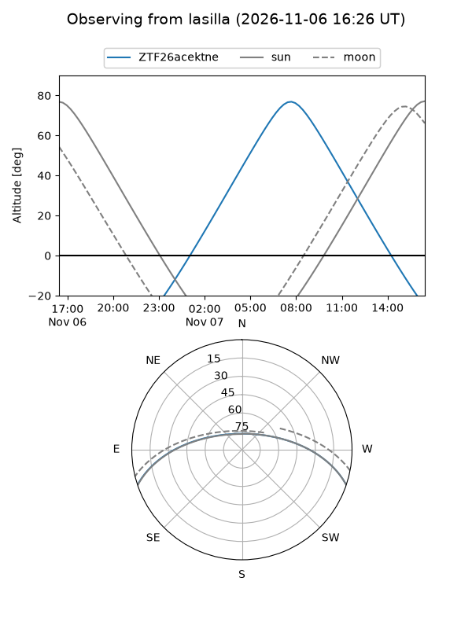
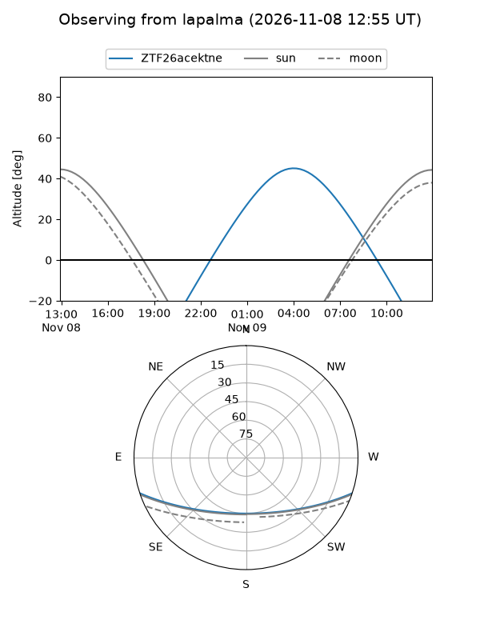
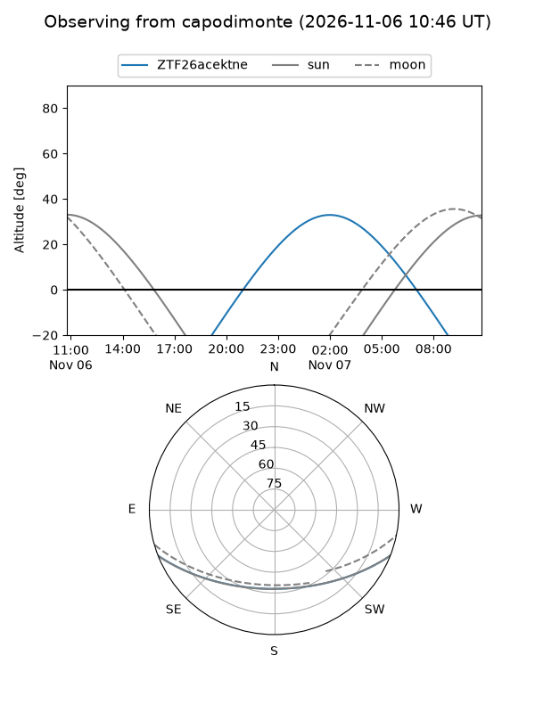
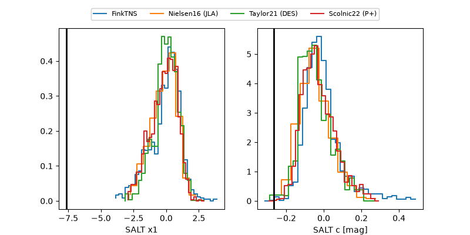

ZTF26acektne
Target ZTF26acektne at 2026-11-06 19:50
Aliases and brokers:
FINK-ZTF: ztf.fink-portal.org/ZTF26acektne
Lasair-ZTF: lasair-ztf.lsst.ac.uk/objects/ZTF26acektne
ALeRCE-ZTF: alerce.online/object/ZTF26acektne
Direct TNS query: direct search
alt names
ZTF26acektne (ztf,fink_ztf)
Coordinates:
equatorial (ra, dec) = 90.0846,-16.16487
equatorial (HMS+DMS) = 06:00:20.31,-16:09:53.52
galactic (l, b) = (222.0856,-18.41883)
Flags:
peak dt: -0.4
Photometry:
last ztfg=18.61, ztfr=18.58
3 ztfg, 1 ztfr detections
Lightcurve

Visibility



Additional plots
